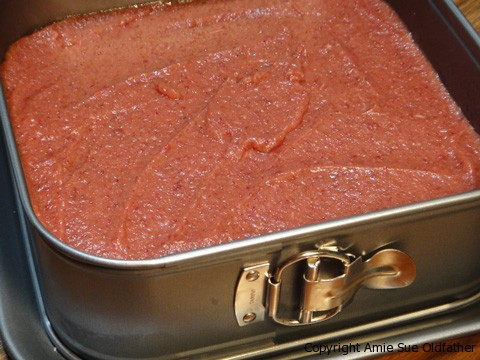
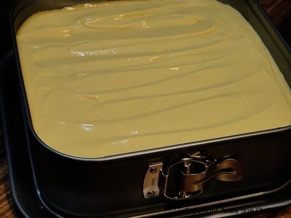
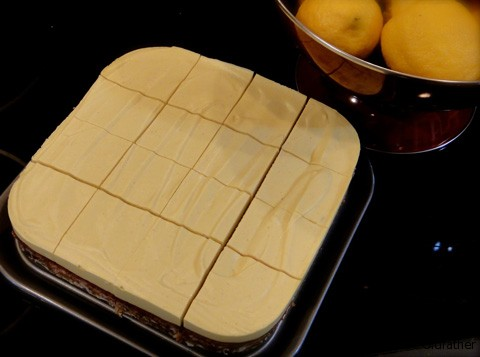
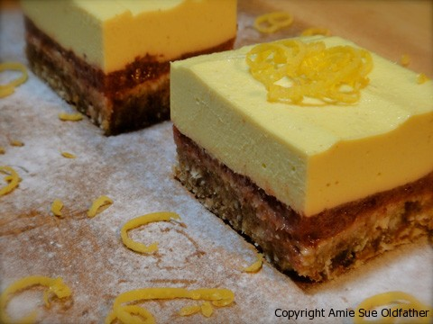

Lemonberry Coconut Bar with Lemon Frosting

~ raw, vegan, gluten-free ~
I am not sure if I should be embarrassed or not, but the inspiration for this sweet treat evolved from leftovers in the fridge. I think I am often guilty of that.
I wish I could say that it came to me in a dream, or was inspired by some recipe that I watched unfold on the Food Network, nope, just leftovers. I can’t handle wasting food, and I am always short on space. Besides, I needed to use up the frosting before I lost all control and crawled into the fridge, cuddling the bowl as I ate it spoonful by spoonful. :) The flavor profile in this little bar, Lemonberry Coconut Bar with Lemon Frosting, is just divine!
Ingredients:
yields 9 x 9 pan
Crust:
- 2 cups raw almond flour
- 2 cups dried shredded coconut, unsweetened
- 3 cups packed Medjool dates, pitted
- 1/4 cup fresh lemon juice
- 2 tsp vanilla extract
- 1/4 tsp Himalayan pink salt
- Zest of 1 lemon (be sure your lemon is organic for this)
Strawberry Date Jam:
- 2 cups packed Medjool dates, pitted
- 2 cups strawberries, organic with greens removed
Frosting:
- 2 cups raw cashews, soaked
- 1 1/4 cup coconut milk
- 1/4 cup lemon juice, fresh
- 1/2 cup raw agave syrup or maple syrup
- 1 Tbsp vanilla
- 1/8 tsp Himalayan pink salt
- 2 Tbsp lecithin powder
- 1 cup raw cold-pressed coconut oil, melted
- 1 tsp Turmeric (this is to enhance the yellow color)
Preparation:
Crust:
- Lightly dust the pan with some extra almond flour. I used a 9 x 9 Springform pan in this recipe.
- To make almond flour, in your food processor, add the almonds and process until the nuts resemble a fine powder. It won’t be light and airy like regular flour, but you shouldn’t see any chunks. Be careful to not over-process, or you will be on your way to making almond butter.
- Add remaining ingredients and process some more until well mixed. This mixture should stick together after you press it between your
- Press into the baking pan evenly.
- Set aside while you make the Strawberry Date Jam
Strawberry date jam:
- In your food processor or blender, combine the two ingredients and blend till nice and creamy.
- Spread the jam over the Lemon Coconut Bars, cover with plastic wrap, and set in the freezer for about 30 minutes. Just enough to make the jam firm so it will be easier to spread the frosting on top.
Lemon frosting
- Add to blender all ingredients except the coconut oil and lecithin, which will be added at the very end.
- Blend until smooth and creamy (3-5 minutes)
- While your blender is running, drizzle in the coconut oil and then slowly add the lecithin. Blend well, but don’t over-process.
- Remove the bars from the freezer and pour the frosting over the Strawberry Date Jam layer. Spread evening.
- Place in freezer or fridge till set up nice and firm.
- Slice and serve! Keep leftovers (if there are any, in the fridge)
The Institute of Culinary Ingredients™
- To learn more about maple syrup by clicking (here).
- Dates are a fantastic ingredient for raw food recipes, click (here) to read why.
- What is Himalayan pink salt, and does it matter? Click (here) to read more about it.
- Is coconut butter the same as coconut oil? Click (here) to find out.




© AmieSue.com